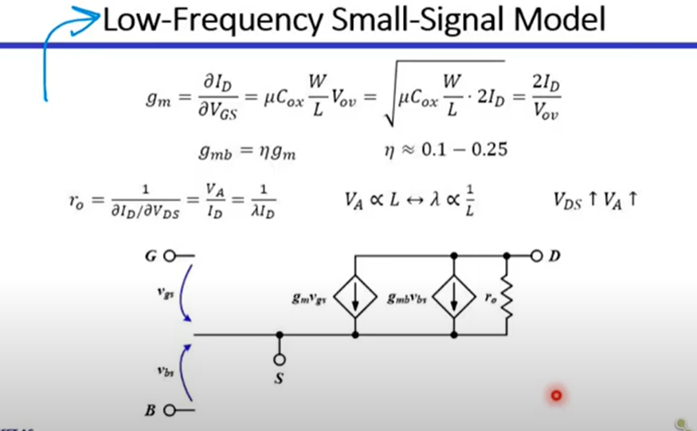

اللهم لا علم لنا الأ ما علمتنا به انك انت علام الغيوب
Analog IC Design
1. Mosfet Large & Small Signal Model
We neglected short channel effect & large VDS effect by using large L=1um and small vds=250mV and we also neglected bodyeffect by grounding the source
1.1.Schematic
Tsmc_130nm_Schematic
1.2. ID-Vs-VDS
Id Vs Vds for Vgs=800mV
1.3. TransConductance
Credits: Dr. Hesham Omran
ID Vs VGS
ID vs VGS and marking our operating point VGS=800mV
to calculate gm as our small signal was of 1mV amplitude
so X2=VGS+1mV, Y2=I(X2) and X1=VGS-1mV, Y1=I(X1)
and then gm=dI/dVGS = dY/dx = 5.1e-5 mhos
Credits: prof. Hesham Omran
Our output resistance upper bound is controlled by the value of ro so we can't increase rout than ro where we can find value of ro from simulation with name of gds where gds=1/ro like in figure below
gds=2.433e-S==>ro=23.523Kohms
effect of increasing ro
Credits: Prof. Hesham Omran
so we cannot increase our Rout more than 23.523Kohms and also we cannot increase Vds very much to increase ro because this will lead to gate loses its control over the drain current
We can model our work above by this model in figure below

Credits: Prof. Hesham Omran
1.4. Short Channel Effects
Credits: Prof. Hesham Omran
Short Channel effects changes the relation between Mosfet drain current and VGS as in case of long channel we use the famous quadratic equation where if we derive transconductance from this equation we find that it is linear which means that it increases with VGS.
While in case of short channel the relation between mosfet drain current and VGS becomes linear which means that if we drive transconductance we will find that it is of constant value.
credits:Prof. Hesham Omran
short channel effect affects the value of ro where it increases very much in this case which leads to high gain but Vgs loses control
2. Basic Amplifier Stages
we have three basic amplifier toplogies which are:
Common Source(CS): which acts as Voltage and current amplifier if we inject the signal from the gate and probing on Drain. where source is common between Drain and Gate
Common Gate(CG): which acts as Voltage amplifier and Current Buffer, Buffer means amplifier of gain=1
Common Drain(CD) or Source Follower(SF)
credits:Prof. Hesham Omran
2.1. Amplifier Analysis Steps
credits:Prof. Hesham Omran
DC analysis: to calculate DC operating point to check operation of mosfet in saturation (VDS>Vov)
Calculate small signal parameters(gm,ro)
Determine Amplifier Parameters(Rin, Rout, Av, Ai)
analysis types
credits:Prof. Hesham Omran
Let's summarize all types of analysis to study amplifier parameters,
we have two types of analysis whether you are doing it by hand or on
simulator like cadence spectre simulator.
2.1.1. Large Signal Analysis
Voltage Gain
Current Gain
Input Resistance
Output Resistance
Bandwidth
2.1.2 Small Signal Analysis
Bias Point
Signal Swing
Distortion
2.1.3. Direct Analysis on Schematic
Credits: Prof. Hisham Omran
We can simplify our solution instead of every time removing every transistor and
draw its small signal model in order to deal with very large circuits that contains
alot of mos transistors. so first we can remove the vccs gmVgs & gmVbs and add them
and put them of mosfet drain branch.
to simplify more, we found that in most cases gate node is grounded when we are calculating
small signal model and also we always make the bulk grounded to neglect body effect so that means
that Vgs=Vbs so we can gm & gmb together in a single gm so delta_Id=(gm+gmb)delta_Vgs
Credits: Prof. Hisham Omran
2.1.4. Common Approximations we usually use:
intrinsic gain >>>1 because it is the max gain we can reach and these
approximations are relative for example you can find (1/gm)~=100Kohms
which is very large but you will find also that ro=10Mohms thats why I said
that approximations are relative
Credits: Prof. Hisham Omran
2.1.5. Rin/Rout Shortcuts
We can simplify the way we use when when we try to find input resistance and output resistance
of the amplifier, like as follow in figure below we can focus on three parts:
R_LFS: Resistance when looking from source
R_LFD: Resistance when looking from drain
Gate_resistance: is always very large so we doesn't care about calculating it
as in figure below:
Credits: Prof. Hisham Omran
2.1.5.1. Resistance Looking From Drain
The eye determines the that I want to see output resistance infront of the red vertical line opposite
to it, we will find in this case the gate is grounded which means that vgs is only controlled by
the voltage drop resistance Rs==>Vgs=-Ix*Rs and we can also neglect body effect as Vgs=Vbs because gate is grounded
so we can add gm & gmb to each other while calculating but keep in mind that they are of different
values. always try to solve as much as possible on the drawing instead of writting many equations,
after all these simplifications we have now only one equation left which is KCL @ node D
which is:$$i_x ={ (g_m+g_{mb})*(-i_xR_s)+{v_x-i_xR_S \over r_o}}$$
$$R_{LFD}={v_x \over i_x}={r_o+[(gm+gm_b)*r_o+1]R_S}={{r_o}+({g_m}+{g_{mb}}){r_o}R_s+R_s}=r_o[1+(gm+gm_b)R_s]+R_s$$
$$neglecting R_s: then, R_{LFD} \sim = r_o[1+(gm+gm_b)R_s]$$
which can get from it easily Vx/Ix which corresponds to
the value of resistance looking from drain we can neglect Rs comparing to gm*ro
we can only put gmb=0 when Rs=0 where we will not have body effect
Credits: Prof. Hisham Omran
We can say by this derivation that drain is acting like a high impedance node and to summarize we get
the following equation in figure and its special Case
Credits: Prof. Hisham Omran
2.1.5.2. Resistance Looking From Source
when looking from source we have same condition on gate where Vbs=Vgs & delta_Id=gm*delta_Vgs
but the voltage on source node will differ because we replaced rs with a voltage source of value Vx
and of current Ix which is injected to mosfet so Vgs=Vg-Vs=0-Vx=-Vx and to explain how idrain=isource
we can say that mosfet acts like a supernode where by conservation law of charge we can tell that the current
that entered this node from the source, it will exit also from drain after all these simplifications what
remains now is performing a kcl at source of mosfet.
KCl @ node S: $$i_x={(g_m+g_{mb})*v_x}+{ v_x-i_x*R_D \over r_o}$$
$$ R_{LFS}={v_x \over i_x}={1 \over {gm+gmb+{1 \over r_o}}}*{(1+{R_D \over r_o})}= {1 \over {g_m+g_{mb}}}*{(1+ {R_D \over r_o})}$$
$$R_{LFS}={1 \over {g_m+g_{mb}}}*{(1+{R_D \over r_o})}$$
$$ (@RD=0)$$ $$R_{LFS}={1 \over {g_m+g_{mb}}}$$
which means that source acts like low impedance node and this connection @Rd=0 we call it diode connected(gate and drain connected)
because @ this case vds=vgs which means that it is now not a voltage controlled current source and changed to a resistor of 1/gm
because id=gmvgs=gmvds====>R(diode connected)=Vds/Ids = 1/gm we call it also source absorbtion
in terms of large signal analysis the diode connected mosfet is always at saturation because vds=vgs and the condition
for saturation is Vds>Vgs-Vth which will always be satisfied
Credits: Prof. Hisham Omran
for below quiz we are trying to calculate Resistance when looking from source for a three cascoded mosfets in order
to calculate it we will first start with mosfet that is connected to ground in small signal analysis which is Vdd node in
case of Pmos as in figure below after calculating rseen from each mosfet we substitute the mosfet in the drawing with
derived R_LFS and then continue on the preceding mosfet and so on, you will find the answer in below quiz is very strange as
R_LFS=ro while we said before that resistancelookingfromsource is a low impedance node but ro is of very high impedance
and this occured due to cascoding transistors which raises our attention to the effect of cascode stages in the future when
we are talking about amplifiers
Lets summarize these equations as follow:
$$R_{in}={v_{in} \over i_{in}}$$
$$R_{out}={v_x \over i_x} @ v_{in}=0$$
$$G_m={i_{out,shortcircuit} \over v_{in}} @v_{out}=0$$
$$A_v={{G_m} R_{out}}$$
$$A_i={{G_m}R_{in}}$$
Remeber that we can get first two equations of Rin& Rout from shortcuts that we learned before all remaining will be is
calculating transconductance using norton method and then at the end we can get voltage & current gain this method of
solution we call it divide and conquer where we simplified large problems into many small problems that we could solve it
independent of each other
2.3. Common Source Amplifier
Common Source Amplifier Parameters:
Common Source Amplifier Parameters
credits:Prof. Hesham Omran
Remember that we are using the amplifier to amplify Vsig not Vin.
which corresponds to Vsignal.
2.3.1 Case 1. Rout=Inf. using Ideal Current Source
2.3.1.1 Theory
Common Source Amplifier Parameters
credits:Prof. Hesham Omran
Intrinsic gain means maximum gain which I can obtain from a
single transistor
credits:Prof. Hesham Omran
small signal analysis with rout=inf. by using ideal current source, first item you start
to debug in simulation is the bias point because all preceding parameters depend on it
2.3.1.2 simulation
Credits: Eng. Hisham Elreedy
you wil find vout(red curve) is larger than vin and also of phase difference of pi
when I bias with current source I no longer need to adjust Vds and worry about its effect on
gate voltage for losing control over the electron channel
2.3.1.3 Hand Analysis
First draw current branch on mosfet drain branch and draw ro in parallel with Vds
and vbs connect it to ground away from the circuit as in figure below
Credits: prof. Hesham Omran
Second combine gm*vgs and gmb*vbs because gate is grounded and then combine them
in a single gm*vgs and calculate vout by applying kvl on the loop between vout and gnd
to obtain vout like in figure below which is equal to Vout=-(gm*Vgs)*ro and vin = Vgs
then we can obtain voltage gain(Av)=Vout/Vin=-gm*ro which demonstrates the results
that we obtained in the simulation
Credits: prof. Hesham Omran
Credits: prof. Hesham Omran
2.3.2 Case 2: using finite drain resistance
credits:Prof. Hesham Omran
credits:Prof. Hesham Omran
Common source Gain
I removed dc value when plotting output by subtracting the output voltage from the average of the total signal using cadence calculator, you will find that they change in phase to explain this:
when vgs increases drain current increases which affect vout precedingly as voltage drop on resistance increases which makes Vout decreases thats why they have phase difference of pi==(180 degrees)
Credits: Eng. Hisham Elreedy
vds problem starts to rise here when we put finite resistance on the drain where it made
the amplifier with very low gain and when we increase Rout we can't increase it than ro=23.523Kohms
2.3.3. case 3: using finite drain & source resistance
Credits: prof. Hesham Omran
Transconductance
first to calculate transconductance as we said before we will use norton method when we make vout=0(short circuit)
as in above figure and calculate iout,sc where now RD will disappear from our calculation because it is parallel with
a short circuit and the current will be equivalent to the mosfet drain current where we can get mosfet drain current
as follow:
$${i_{out,shortcircuit}}={-{g_m}{v_{gs}}+{{v_s} \over {r_o}}}$$
$$and, {v_{gs}}={{v_g}-{v_s}}=v_{in}-v_s$$
$$then,{i_{out,sc}=-g_{m}{(v_{in}-v_s)}+{{v_s} \over {r_o}}}$$
$$and, {v_s}=-{{i_{out,shortcircuit}}Rs}$$
$$then, {i_{out,sc}}=-g_{m}{(v_{in}-(-{{i_{out,sc}}Rs}))+{-{{i_{out,sc}}Rs} \over {r_o}}}$$
$$then, {i_{out,sc}[1+{g_{m}R_s}+{{R_s} \over {r_o}}]}=-{g_m}{v_{in}}$$
$$then, transconductance=G_m={i_{out,sc} \over v_{in}}={-{g_m} \over {[1+{g_{m}R_s}+{{R_s} \over {r_o}}]}}$$
outputResistance
to calculate Rout which is equivalent to thevenin resistance where we will close any independent sources and try
to use Rin/Rout shortcuts:
$$R_{LFD}=r_{o}[1+(g_{m}+g_{mb})]R_s$$
$$R_{out}={R_{LFD}||R_D}={{R_D}||{{r_o}[1+(g_m+g_{mb})R_s]}}$$
from above equations we could now determine voltage gain and current gain where:
$$Voltagegain: A_v={{G_m}{R_{out}}}$$
$$Currentgain: A_i={{G_m}R_{in}}$$
Output Resistance Cases
we could have three cases to for RD:
if RD is ac o.c.(currentsource): voltage_gain=-gm*ro
if RD <<<< RLFD:
3. Cascode Amplifier
3.1. double stage cascode with ideal current source as load
Credits: prof. Hesham Omran
3.1.1. Small Signal Analysis
3.1.1.1 TransConductance
schematic below shows a simple model of cascode amplifier which we will try to calculate its parameters
like before as follow(notice that we neglected ro of M1 and remember that common base acts like current buffer):
$$i_{out,sc}=-{g_{m1}}v_{in}$$
$$G_{mtotal}={i_{out,sc} \over v_{in}}=-g_{m1}$$
Same Gm of CommonSource amplifier
We can solve it also in another way by solving each stage independently like solving first CommonSource stage and try
to get inorton you will find it is equal to -gm1 and rout seen from source of M2 as follow:
$$i_{norton,Shortcircuit}=-g_{m1}v_{in}$$
$$Transconductance_{firstStage}=-g_{m1}$$
$$i_{norton,shortcircuit}=-g_{m1}v_{in}$$
$$Transconductance_{secondStage}=-g_{m1}$$
3.1.1.2. Output Resistance
$$R_{LFDofM1}=ro1$$
$$R_{LFDofM2}=r_{o2}[1+(g_{m2}+g_{mb2}R_{LFDofM1})]$$
$$R_{outtotal}= \infty(currentsource) ||R_{LFDofM2}=R_{LFDofM2}=r_{o2}{[1+(g_{m2}+g_{mb2}r_{o1})]} \sim ={(g_{m2}+g_{mb2})}{r_{o1}}{r_{o2}}$$
Rout is significantly boosted by that voltage gain is significantly boosted
First Method:
$$A_v =G_{mtotal} R_{outtotal} \sim = -{g_{m1}(g_{m1}+g_{mb2})r_{o1}r_{o2}}$$
by assuming all gm and ro are equal and neglecting body effect we can get:
$$A_v=-(g_m r_o)^2$$
how Vbias affects the circuit and what do I need from it? first I use it to keep M1 in sat and
to keep M1 in sat we need Vds1>Vgs1-Vth1 where the worst case is at the largest value of Vgs because this case will
put limits on VB to keep M1 in sat so:
$$V_B>V_{GS2}+V_{DS1,max},Where, V_{DS1,max}={V_{overdrive,max}=V_{in,max}-V_{Th1}}$$
$$Then, V_B>V_{GS2}+(V_{in,max}-V_{Th1}) $$
second thing I need from VB is to keep also M2 in sat where:
$$to keep M2 in sat: V_{DS2}>V_{GS2}-V_{TH2},by removing S_2 from both sides then V_{D2}>V_{G2}-V_{Th2}$$
$$where, V_{G2}=V_B, and, V_{D2}=V_{out}, then, V_{out}>{V_B-V{Th2}}$$
$$then, V_B < {V_{out,min}-V_{Th2}}$$
where Vout,min is the minimum voltage required to keep M1,M2 sat which is equal to 2Voverdrive
by combining our derived limits we get:
$$V_{GS2}+(V_{in,max}-V_{Th1}) < V_B < {V_{out,min}-V_{Th2}}$$
which means that limits on output range is oppositely coupled with input range as condition of Vout,min
must be larger than Vin,max + VGS2 for same threshold voltage in order to specify an amount for
VB if this doesn't happen we will either hurt input or output range
3.2. double stage cascode with finite resistance RD as load
Credits: prof. Hesham Omran
when we use finite Resistance RD by that we remove the effect of boosting Rout so what
do I got benefitted from using cascoded transistors in this case we are increasing voltage gain but it will
affect the bandwidth of the circuit which we will discuss later on
3.3. double stage cascode with active cascode load
Credits: prof. Hesham Omran
3.3.1. Small Signal Analysis
If we want to keep the large Rout, we must use cascode load why not a current source because
in real life there is nothing called ideal current source but we create current source using transistors
and why not using single stage because output resistance of the load will be small compared to o/p resistance
of the driving cascode so it will act like previous case of using finite RD
assuming all gm and ro are equal and neglecting body effect we can get:
$$A_v=-{(g_m r_o)^2 \over 2}$$ we divided by two because Rout seen from the load in this case is
equal to Rout seen from the driver in this case so total Rout is equivalent to parallelism
of them
3.3.2. Large Signal Analysis
We are concerned about it now because we are now talking about a circuit that
can be implemented in real life so we are concerned about biasing the circuit correctly, we now that
for every transistor its drain-source voltage must be greater than overdrive voltage so:
$$ V_{DSM4}+V_{DSM3}=V_{DD}-V_{SM4}+V_{SM4}-V_{out}=V_{DD}-V{out}>2*V_{ov}$$
$$then, V_{out} <{ 2*V_{ov} }$$
to make M3 & M4 stays in sat region(upper limit)
and also:
$$ V_{DSM1}+V_{DSM2}=(V_{out}-V_{SM1})+(V_{SM1}-0)=V_{out}>2V_{ov}$$
to make M1 & M2 stays in sat region(lower limit)
and you can remember also the other parameters in large signal analysis by returning in index or you can
continue with me we are now concerned with output swing. which we can calculate from upper, lower limits
where outputswing=upperlimit-lowerlimit= VDD-4Vov which is demonstrated in figure below: